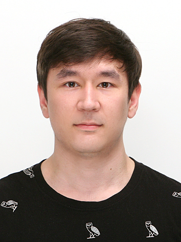

|  | Musaev Nuriddin Bakhtiyorjon Ug`li |
Nuriddin is an International Studies student, living in Seoul, South Korea, who has completed his seventh year of studies out of a total of 8 at the Hankuk University of Foreign Studies. He has a passion for the politics world and seeks to bridge the gap between theoretical knowledge and practical experience through an internship. He has become an adaptable, driven and determined individual where her strengths lie in thriving in time-sensitive situations especially when working within a team, yet can apply an analytical approach to tasks when working solely. He is proficient in 4 languages (English, Russian, Uzbek and Korean) and also has good communication skills.
2018-2023 (Expected Graduation)
Hankuk University of Foreign Studies International Studies - Bachelor Modules include: International Cooperation Major, International Trade and Economy Major
2017 - 2018
Reformed Graduate University (개신대학원대학교) Korean Language Proficiency Courses Modules include: 1-2-3-4 Levels of Korean Language
2016 - 2017
Korea University Korean Language Proficiency Courses Modules include: 1st Level of Korean Language
2013 - 2015
Fergana Professional Industrial College Engineering Mechanics Degree Modules include: Professional Driver License, Relevant coursework: Car Building (engine)
2012 - 2013
Lyceum #3 of Fergana Foreign Languages Education 1 year of education in Lyceum, after transferred to Industrial College Fergana
2003 - 2012
#2 School of Foreign Languages (High School) A Levels: Economics, Mathematics, History As Levels: Economics, History, Mathematics, Foreign Languages 12 GCSEs: Mathematics, History, English, Russian, Korean, Computing, International Relations
December 2014 - April 2015
Administrative assistant at Emir Restaurant (Uzbekistan, Fergana):
May 2017 to October 2019 | Driver Manager at Shuttle Delivery (Seoul, South Korea):
| Language Skills: | Native Uzbek, Fluent in Russian, Advanced English, Upper Intermediate Korean. |
| Other Skills: | Excellent written and verbal communication skills Confident and professional speaking abilities Excellent listener and persuasive speaker Creative writing skills Speaking in public, in person, to groups, or via media sources Good presentation and negotiation skills |
I perform well on a job, both working in a team and alone although I find the dynamic of working in a team more enjoyable. I am used to working on different projects of varying complexity, such as translating a text from one language to another and presenting it to a large audience, or writing an argumentative essay on a political issue. I have been told I am very friendly, maintain a positive atmosphere at work and school, and can be a support to others when they need it.
Certificate of Appreciation | Diploma (high-school and College) | Gratitude Certificate (participation in School activities and excellent behavior | Several Certificates of Achievements in different subjects | Professional Driver License. | Toeic (English Proficiency test) 915 points.
Gmail: Ukamtv@gmail.com
P.S.: Facebook ID